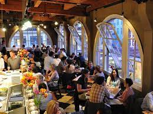
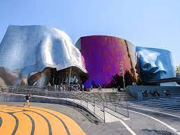

Welcome to Seattle Washington-Travel Guide
Travel Plans
Seattle, nestled between Puget Sound and Lake Washington, is a vibrant city known for its iconic Space Needle, bustling Pike Place Market,
and historic waterfront. Explore the diverse neighborhoods, savor the fresh seafood, and immerse yourself in the rich cultural scene.
Don't miss the chance to venture into the surrounding natural beauty,
with opportunities for hiking, boating, and admiring the stunning views of the Olympic and Cascade mountain ranges.
Neigborhood Dining

Seattle, known as the Emerald City, boasts a plethora of attractions for visitors and locals alike. From the iconic Space Needle offering
panoramic views of the city to the vibrant Pike Place Market where you can sample fresh seafood and watch fishmongers toss fish,
there's something for everyone in Seattle. Explore the historic Pioneer Square, visit the fascinating Museum of Pop Culture (MoPOP),
stroll through the serene Japanese Garden in the Washington Park Arboretum, or take a leisurely ferry ride to Bainbridge Island for
stunning views of the city skyline. Whether you're interested in art, culture, food, or nature, Seattle has it all.
Attractions

Seattle, known as the Emerald City, boasts a plethora of attractions for visitors and locals alike. From the iconic Space Needle offering
panoramic views of the city to the vibrant Pike Place Market where you can sample fresh seafood and watch fishmongers toss fish,
there's something for everyone in Seattle. Explore the historic Pioneer Square, visit the fascinating Museum of Pop Culture (MoPOP),
stroll through the serene Japanese Garden in the Washington Park Arboretum, or take a leisurely ferry ride to Bainbridge Island for
stunning views of the city skyline. Whether you're interested in art, culture, food, or nature, Seattle has it all.